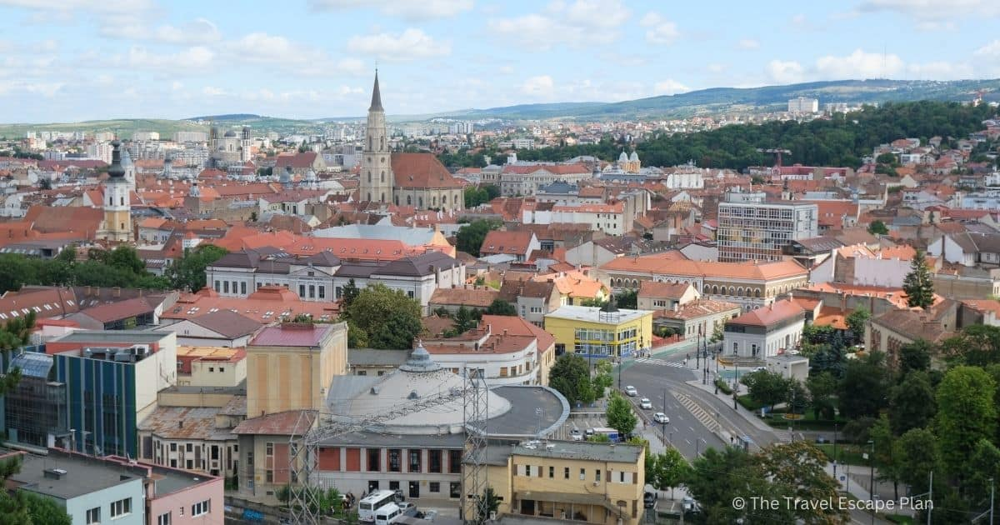
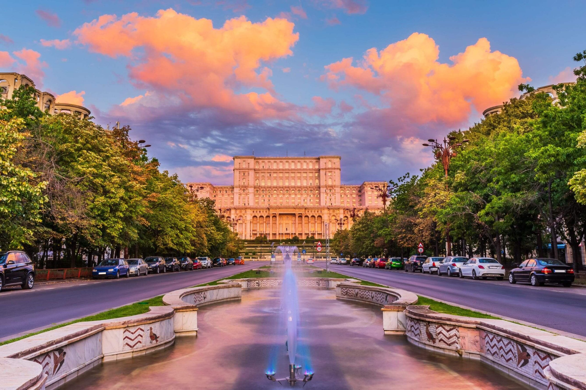
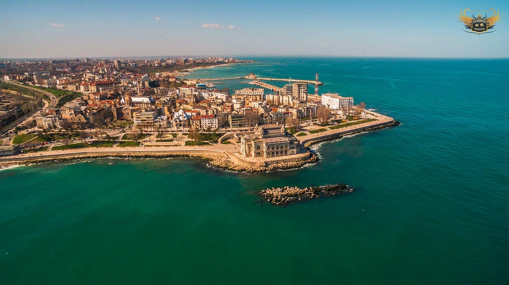

Împreună putem reduce risipa alimentară și ajuta comunitățile vulnerabile din România.
Cifre reale despre impactul risipei alimentare
Analiză detaliată a fenomenului
de a reduce risipa alimentară


